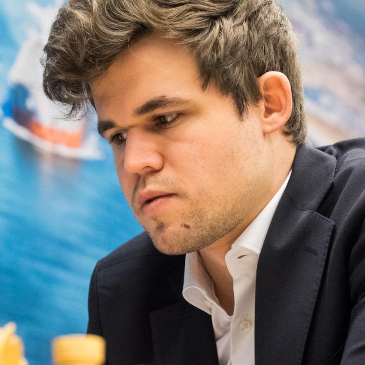

Meet the Grandmaster who has redefined the game of chess.Magnus Carlsen is a Norwegian chess grandmaster, known for his unparalleled skill and strategy. He became the youngest player to be ranked world No. 1 and is regarded as one of the greatest chess players of all time. Carlsen's ability to excel in various types of positions and his innovative style of play have earned him numerous victories on the international stage. Through his revolutionary approach to chess, Carlsen has changed the way the game is perceived and played, inspiring generations of chess enthusiasts globally. |
 | |||||||||||||||||||||||||||||||||||||||||||||||||||||||||||||||||||||||||||||
Early Life and Chess BeginningsSven Magnus Øen Carlsen was born on November 30, 1990, in Tonsberg, Norway. From an early age, his exceptional memory and problem-solving skills became apparent, as he could recall complex geographical facts and solve jigsaw puzzles far beyond his age level. His father, an amateur chess player, introduced him to the game at age five, but Magnus didn’t immediately show interest. However, by the age of eight, his passion for chess ignited, and he began training seriously. His incredible talent quickly became evident as he started outplaying older and more experienced players. |
||||||||||||||||||||||||||||||||||||||||||||||||||||||||||||||||||||||||||||||
Rising Star and Grandmaster TitleMagnus Carlsen’s rise in the chess world was meteoric. He gained international recognition in 2004 when, at the age of 13, he became the youngest Grandmaster in the world at the time. He achieved this after a stunning performance at the Corus Chess Tournament in the Netherlands. His aggressive and fearless playing style, combined with a deep understanding of the game, made him a formidable opponent. By his mid-teens, he was regularly competing with some of the best players in the world. |
||||||||||||||||||||||||||||||||||||||||||||||||||||||||||||||||||||||||||||||
Becoming World No. 1In 2010, at just 19 years old, Magnus Carlsen became the youngest player ever to be ranked No. 1 in the world by FIDE, the international chess federation. His ascent to the top was fueled by an innovative approach to chess, relying more on intuition and deep strategic understanding rather than extensive theoretical preparation. Under the guidance of legendary coach Garry Kasparov for a time, Carlsen refined his style further, becoming one of the most dominant forces in modern chess. |
||||||||||||||||||||||||||||||||||||||||||||||||||||||||||||||||||||||||||||||
Winning the World Chess ChampionshipMagnus Carlsen reached the pinnacle of his career in 2013 when he defeated reigning champion Viswanathan Anand to become the World Chess Champion. His victory was a demonstration of his incredible positional play, resourcefulness, and psychological strength. Carlsen successfully defended his title in 2014, 2016, and 2018, proving his dominance over the chess world. His ability to squeeze wins from seemingly equal positions and his deep endgame skills set him apart from other top players. |
||||||||||||||||||||||||||||||||||||||||||||||||||||||||||||||||||||||||||||||
|
Record-Breaking RatingCarlsen has set multiple records throughout his career, including achieving the highest-ever FIDE rating of 2882 in 2014. This record-breaking rating surpassed that of Garry Kasparov, who had long been considered the greatest player in history. Carlsen’s ability to maintain a consistently high performance over the years has made him one of the strongest and most stable chess players ever, with a peak performance level rarely seen in the history of the game. |
|||||||||||||||||||||||||||||||||||||||||||||||||||||||||||||||||||||||||||||
Dominance in Various Chess FormatsWhile many champions specialize in classical chess, Magnus Carlsen has shown his mastery in rapid and blitz formats as well. He has won multiple World Rapid Chess Championships and World Blitz Chess Championships, proving that his ability to think quickly and precisely is unparalleled. His dominance across different time controls has cemented his status as one of the most versatile players in history. |

|
|||||||||||||||||||||||||||||||||||||||||||||||||||||||||||||||||||||||||||||
Stepping Away from the World TitleIn 2022, after holding the World Chess Championship for nearly a decade, Carlsen announced that he would not defend his title in 2023, stating that he lacked motivation to continue. Despite this, he remains the highest-rated player in the world and continues to dominate in elite chess tournaments. His decision marked a turning point in chess history, as the championship title was passed to a new generation of players, but Carlsen’s influence on the game remains as strong as ever. |